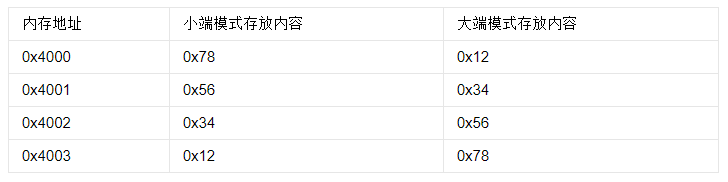

操作系统第一次问答
1.80x86 系列的发展历史
- 1978年6月，intel推出第一款16位微处理器8086，采用20位地址线
- 1982年发布80286，主频提高至12MHz
- 1985年发布80386，处理器变为32位，地址线扩展至32位
- 1989年发布80486，1993年发布80586并命名为奔腾
2.说明小端和大端的区别，并说明80x86 系列采用了哪种方式？
小端：低位在前高位在后
大端：高位在前低位在后（网络编程

x86用小端
这是因为在计算机系统中，我们是以字节为单位的，每个地址单元都对应着一个字节，一个字节为8bit。但是在C语言中除了8bit的char之外，还有16bit的short型，32bit的long型（要看具体的编译器），另外，对于位数大于8位的处理器，例如16位或者32位的处理器，由于寄存器宽度大于一个字节，那么必然存在着一个如果将多个字节安排的问题。
3.8086 有哪五类寄存器，请分别举例说明其作用？
段寄存器：
DS：数据段寄存器
CS：代码段寄存器
SS：堆栈段寄存器
ES：附加段寄存器
控制寄存器：
IP：指令指针寄存器，16位专用寄存器，指向当前需要取出的指令字节。当总线接口单元从内存中取出一个指令字节后，IP自动加一，指向下一个指令字节。IP指向的是指令地址的段内地址偏移量。
flags：标志寄存器，又包括CF,SF,ZF,OF,AF,PF,DF,TF,IF
- 进位标志CF：记录运算时最高有效位产生的进位值
- 符号标志SF：记录运算结果的符号，结果为负时置1，否则置0
- 零标志ZF：运算结果为0时置1，否则置0
- 溢出标志OF：操作数超过了机器可表示的范围称为溢出。溢出置1，否则置0
- 辅助进位标志AF：记录运算时第3位（半个字节）产生的进位值、
- 奇偶标志PF：用来为机器中传送信息时可能产生的代码出错情况提供检验条件。操作数1的个数为偶数时置1，否则置0
- 方向标志DF：串处理指令时控制处理信息的方向。DF为1时，串处理从高地址向低地址方向处理。为0时，从低地址向高地址方向处理。
- 陷阱标志TF：调试时的单步方式操作。TF为1，每条指令执行完产生陷阱，系统控制计算机。TF为0，CPU正常工作，不产生陷阱
- 中断标志IF：控制可屏蔽硬件中断。IF为1时，允许8086处理器响应中断请求。
指针寄存器：
SP：堆栈寄存器，指定栈顶的段偏移地址和SS决定的栈段地址，一起决定了栈顶元素的地址
BP：基址寄存器，给出堆栈中数据区基址的偏移、
变址寄存器：
SI：源变址寄存器，在串处理指令中，SI作为隐含的源变址寄存器与DS联用，以确定数据段中的存储单元地址。
DI：目的变址寄存器，在串处理指令中，DI和附加段寄存器ES联用，以达到在附加段中寻址的目的
数据寄存器：
AX：累加寄存器
BX：基地址寄存器
CX：计数器寄存器，决定是否跳转
DX：数据寄存器
4.什么是寻址？立即寻址和直接寻址的区别是什么？
寻址：找到操作数的地址
立即寻址：直接给出了操作数，事实上没有寻址
直接寻址：直接给出了地址，用[]取操作数
5.请举例说明寄存器间接寻址、寄存器相对寻址、基址加变址寻址、相对基址加变址寻址四种方式的区别
寄存器间接寻址：操作数有效地址存在寄存器中 MOV AX [BX]
寄存器相对寻址：以指定的寄存器内容加上指令给出的位移量MOV AX [SI+3]
基址加变址寻址：把一个基址寄存器的内容，加上变址寄存器的内容，并以一个段寄存器为地址基准 MOV AX [BX+DI]
相对基址加变址：在基址加变址的基础上再加上指令给出的位移量
6.请分别简述MOV 指令和LEA 指令的用法和作用？
MOV指令：MOV指令是数据传送指令，也是最基本的编程指令，用于将一个数据从源地址传送到目标地址
LEA指令：有效地址传送指令，LEA 目的，源 ；取源操作数地址的偏移量，并把它传送到目的操作数所在的单元。
MOV取的是内容，LEA取的是地址
7.请说出主程序与子程序之间至少三种参数传递方式
- 利用寄存器传递参数
- 利用约定的地址传递参数
- 利用堆栈传递参数
8.如何处理输入和输出，代码中哪里体现出来？
输入：
mov eax, 3
mov ebx, 0
mov ecx, var
mov edx, dword[size]
int 80h输出：
mov eax, 4
mov ebx, 1
mov ecx, msg1
mov edx, size1
int 80h 9.有哪些段寄+存器
SS：堆栈段寄存器
DS：数据段寄存器
CS：代码段寄存器
ES：附加段寄存器
10.通过什么寄存器保存前一次的运算结果，在代码中哪里体现出来
通用寄存器
11.解释boot.asm 文件中，org 07c00h 的作用
org是伪指令，告诉汇编器，当前这段代码会放在07c00h处。所以，如果之后遇到需要绝对寻址的指令，那么绝对地址就是07c00h加上相对地址。在第一行加上org 07c00h只是让编译器从相对地址07c00h处开始编译第一条指令，相对地址被编译加载后就正好和绝对地址吻合
12.boot.bin 应该放在软盘的哪一个扇区？为什么？
第一个扇区
开机，从ROM运行BIOS程序，BIOS程序检查软盘0面0磁道1扇区，如果扇区以0xaa55结束，则认定为引导扇区，将其512字节的数据加载到内存的07c00处，然后设置PC，跳到内存07c00处开始执行代码。以上的0xaa55以及07c00都是一种约定，BIOS程序就是这样做的，所以我们就需要把我们的os放在软盘的第一个扇区，填充，并在最末尾写入0xaa55
13.loader 的作用有哪些？
- 跳入保护模式
- 启动内存分页
- 从kernel.bin中读取内核，并放入内存，然后跳转到内核所在的开始地址，运行内核
14.解释NASM 语言中[ ] 的作用
任何不被[]括起来的标签或者变量名都会被认为是地址，访问标签中的内容必须用[]
15.解释语句times 510-($-$$) db 0，为什么是510? $ 和$$ 分别表示什么？
$表示当前指令的地址，$$表示程序的起始地址（即最开始的07c00h），所以$-$$就等于本条指令之前的所有字节数。510-($-$$)的效果就是，填充了这些0之后，从程序开始到最后一个0，一共是510个字节。再加上最后的结束标志两个字节(0xaa55是结束标志)，整段程序的大小就是512个字节，刚好占满一个扇区。
16.解释配置文件bochsrc 文件中各参数的含义
megs:32
display_library: sdl
floppya: 1_44=a.img, status=inserted
boot: floppymegs：虚拟机有多大的内存，32表示32MB
display_library：图形库。linux为sdl
floppya：用哪个磁盘映像，软盘关键字为floppy，inserted（软盘插入软驱）
boot：选择启动盘